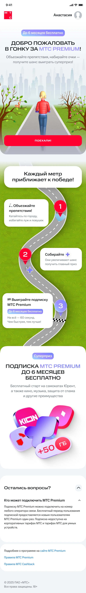
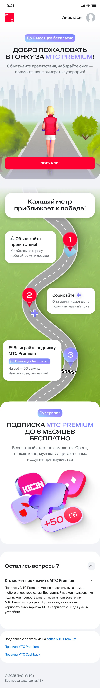
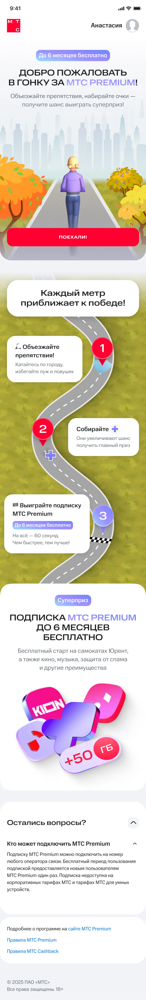
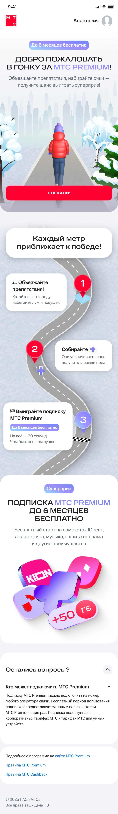

Игра Runner — Сезоны года
Серия из четырёх промолендингов для игровой механики МТС Premium. Пользователь проходит дистанцию, собирает бонусы и получает шанс выиграть подписку; визуальный сценарий адаптирован под весну, лето, осень и зиму.



